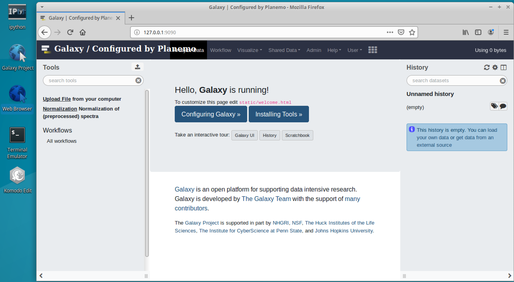
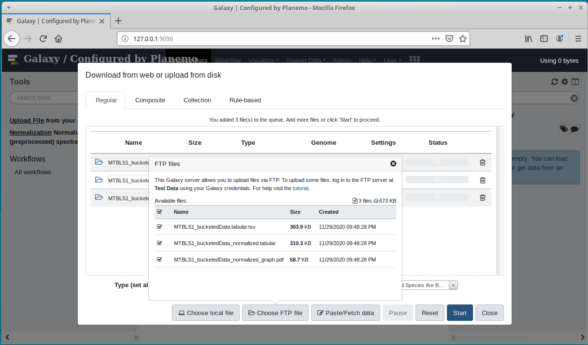
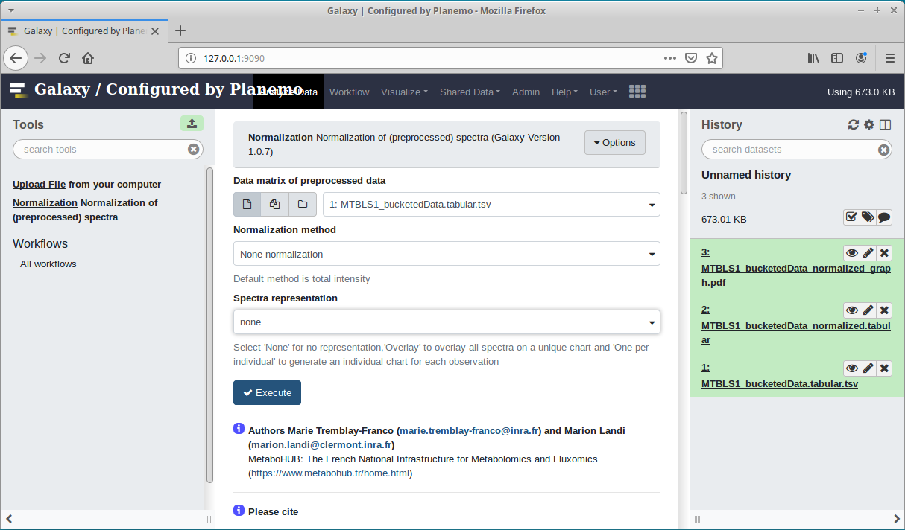
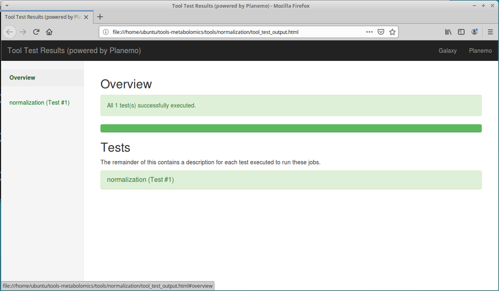

Guide for Planemo
 Please complete this tutorial with the GTN ones: - Slides - Planemo tutorial
Please complete this tutorial with the GTN ones: - Slides - Planemo tutorial
 Planemo big picture (source)
Planemo big picture (source)
planemo lint
planemo lint checks for common errors and best practices. It will check different criterias to know if the xml wrapper is in good shape.
Let’s take an existing tool: “normalization”
$ cd ~/tools-metabolomicstools/normalization/
$ planemo lint .
Linting tool /private/tmp/tools-metabolomics/tools/normalization/NmrNormalization_xml.xml
Applying linter tests... CHECK
.. CHECK: 1 test(s) found.
Applying linter output... CHECK
.. INFO: 3 outputs found.
Applying linter inputs... CHECK
.. INFO: Found 8 input parameters.
Applying linter help... CHECK
.. CHECK: Tool contains help section.
.. CHECK: Help contains valid reStructuredText.
Applying linter general... CHECK
.. CHECK: Tool defines a version [1.0.7].
.. CHECK: Tool defines a name [Normalization].
.. CHECK: Tool defines an id [normalization].
.. CHECK: Tool targets 16.01 Galaxy profile.
Applying linter command... CHECK
.. INFO: Tool contains a command.
Applying linter citations... CHECK
.. CHECK: Found 1 likely valid citations.
Applying linter tool_xsd... CHECK
.. INFO: File validates against XML schema.All seems good! Otherwise, you may to inverse some tags or complete others.
To complete this checking, you can have a look at the IUC Best Practices
planemo serve
planemo serve launches Galaxy instance with specified tools.
1. Launch planemo server within the tool directory
$ cd tools-metabolomics/tools/normalization/
$ planemo serve
Starting Galaxy with
[...]
Starting server in PID 7800.
serving on http://127.0.0.1:90902. Open a web-browser

3. Import your test data in the history
- Upload file from your computer
- Choose FTP file
- Tick the necessary files
- Start

Note: It can take ages! Because Galaxy need to install a dependency to upload files.
You can check that in an other terminal:
$ ps -edf | grep miniconda
ubuntu 9121 7800 92 22:02 pts/8 00:03:45 /home/ubuntu/miniconda3/bin/python /home/ubuntu/miniconda3/bin/conda create -y --quiet --override-channels --channel iuc --channel conda-forge --channel bioconda --channel defaults _bcftools@1.5 bcftools=1.54. Run the tool

Note: It can take ages! Because Galaxy need to the tool dependencies.
You can check that in an other terminal:
$ ps -edf | grep miniconda
ubuntu 9121 7800 92 22:02 pts/8 00:03:45 /home/ubuntu/miniconda3/bin/python /home/ubuntu/miniconda3/bin/conda create -y --quiet --override-channels --channel iuc --channel conda-forge --channel bioconda --channel defaults --name __r-batch@1.1_4 r-batch=1.1_4You can also check the log in the planemo serve terminal:
Package plan for installation in environment /home/ubuntu/miniconda3/envs/__r-batch@1.1_4:
The following NEW packages will be INSTALLED:
_libgcc_mutex: 0.1-conda_forge conda-forge
_openmp_mutex: 4.5-1_gnu conda-forge
_r-mutex: 1.0.1-anacondar_1 conda-forge
[...]
r-base: 3.5.1-hc461eb7_1012 conda-forge
r-batch: 1.1_4-r351_1001 conda-forge
[...]
galaxy.jobs.command_factory INFO 2020-11-29 22:24:37,533 Built script [/tmp/tmp2QjWR8/job_working_directory/000/2/tool_script.sh] for tool command [[ "$(basename "$CONDA_DEFAULT_ENV")" = "$(basename '/home/ubuntu/miniconda3/envs/__r-batch@1.1_4')" ] ||
MAX_TRIES=3
COUNT=0
while [ $COUNT -lt $MAX_TRIES ]; do
. '/home/ubuntu/miniconda3/bin/activate' '/home/ubuntu/miniconda3/envs/__r-batch@1.1_4' > conda_activate.log 2>&1
if [ $? -eq 0 ];then
break
else
let COUNT=COUNT+1
if [ $COUNT -eq $MAX_TRIES ];then
echo "Failed to activate conda environment! Error was:"
cat conda_activate.log
exit 1
fi
sleep 10s
fi
done ; Rscript /home/ubuntu/tools-metabolomics/tools/normalization/NmrNormalization_wrapper.R dataMatrix /tmp/tmp2QjWR8/files/000/dataset_1.dat scalingMethod None graphType None logOut /tmp/tmp2QjWR8/files/000/dataset_4.dat dataMatrixOut /tmp/tmp2QjWR8/files/000/dataset_5.dat graphOut None]planemo test
Launch planemo test within the tool directory
$ planemo test
[...]
2020-11-29 22:43:01,352 DEBUG [galaxy.tools.deps] Using dependency r-batch version 1.1_4 of type conda
2020-11-29 22:43:01,354 DEBUG [galaxy.tools.deps] Using dependency r-batch version 1.1_4 of type conda
2020-11-29 22:43:01,566 INFO [galaxy.jobs.command_factory] Built script [/tmp/tmpOrVdoX/job_working_directory/000/2/tool_script.sh] for tool command [[ "$(basename "$CONDA_DEFAULT_ENV")" = "$(basename '/home/ubuntu/miniconda3/envs/__r-batch@1.1_4')" ] ||
MAX_TRIES=3
COUNT=0
while [ $COUNT -lt $MAX_TRIES ]; do
. '/home/ubuntu/miniconda3/bin/activate' '/home/ubuntu/miniconda3/envs/__r-batch@1.1_4' > conda_activate.log 2>&1
if [ $? -eq 0 ];then
break
else
let COUNT=COUNT+1
if [ $COUNT -eq $MAX_TRIES ];then
echo "Failed to activate conda environment! Error was:"
cat conda_activate.log
exit 1
fi
sleep 10s
fi
done ; Rscript /home/ubuntu/tools-metabolomics/tools/normalization/NmrNormalization_wrapper.R dataMatrix /tmp/tmpOrVdoX/files/000/dataset_1.dat scalingMethod Total graphType Overlay logOut /tmp/tmpOrVdoX/files/000/dataset_2.dat dataMatrixOut /tmp/tmpOrVdoX/files/000/dataset_3.dat graphOut /tmp/tmpOrVdoX/files/000/dataset_4.dat]
2020-11-29 22:43:02,633 DEBUG [galaxy.tools.deps] Using dependency bcftools version 1.5 of type conda
2020-11-29 22:43:02,634 DEBUG [galaxy.tools.deps] Using dependency bcftools version 1.5 of type conda
ok
----------------------------------------------------------------------
XML: /tmp/tmpOrVdoX/xunit.xml
----------------------------------------------------------------------
Ran 1 test in 47.239s
OK
[...]
Testing complete. HTML report is in "/home/ubuntu/tools-metabolomics/tools/normalization/tool_test_output.html".
All 1 test(s) executed passed.
normalization[0]: passed[optional] Open the html report
$ firefox tool_test_output.html
Failed?
Possibilities:
- Open the html report (Cf above)
- Try to run the test as Galaxy
$ planemo test --no_cleanup
[...]
2020-11-29 22:56:34,800 DEBUG [galaxy.tools.deps] Using dependency r-batch version 1.1_4 of type conda
2020-11-29 22:56:34,834 INFO [galaxy.jobs.command_factory] Built script [/tmp/tmpmUFlJJ/job_working_directory/000/2/tool_script.sh] for tool command [[ "$(basename "$CONDA_DEFAULT_ENV")" = "$(basename '/home/ubuntu/miniconda3/envs/__r-batch@1.1_4')" ] ||
MAX_TRIES=3
COUNT=0
while [ $COUNT -lt $MAX_TRIES ]; do
. '/home/ubuntu/miniconda3/bin/activate' '/home/ubuntu/miniconda3/envs/__r-batch@1.1_4' > conda_activate.log 2>&1
if [ $? -eq 0 ];then
break
else
let COUNT=COUNT+1
if [ $COUNT -eq $MAX_TRIES ];then
echo "Failed to activate conda environment! Error was:"
cat conda_activate.log
exit 1
fi
sleep 10s
fi
done ; Rscript /home/ubuntu/tools-metabolomics/tools/normalization/NmrNormalization_wrapper.R dataMatrix /tmp/tmpmUFlJJ/files/000/dataset_1.dat scalingMethod Total graphType Overlay logOut /tmp/tmpmUFlJJ/files/000/dataset_2.dat dataMatrixOut /tmp/tmpmUFlJJ/files/000/dataset_3.dat graphOut /tmp/tmpmUFlJJ/files/000/dataset_4.dat]Get the working directory in the logs
$ cd /tmp/tmpmUFlJJ/job_working_directory/000/2/
$ ./galaxy_*.sh
$ ls workingExplainations
cd /tmp/tmpmUFlJJ/job_working_directory/000/2/lead you to the Galaxy working directory./galaxy_*.shrun the job as Galaxy did with the dependencies, the env variables …ls working/the job outputs are push in this directory. You can add extra logs or flags in your script to investigate in.
Good luck!
[optional] planemo conda_env
It can be practical to enable your tool Conda environment for debuging purpose.
$ cd tools-metabolomics/tools/normalization/
$ # here we can check that R isn't available in your $PATH
$ R --version
The program 'R' is currently not installed. You can install it by typing:
sudo apt install r-base-core
$ # planemo will generate a bash script which we source immediately using the .
$ . <(planemo conda_env NmrNormalization_xml.xml)
Deactivate environment with conda_env_deactivate
$ which R
/home/ubuntu/miniconda3/envs/jobdepsnq689ye7325fdd48bc9d36b864284fa0ff5f09769060a0bf098ef4ab24c33996193d03/bin/R
$ R --version
R version 3.5.1 (2018-07-02) -- "Feather Spray"
$ # we destroy this temporary conda environment
$ conda_env_deactivate
[...]
$ R --version
The program 'R' is currently not installed. You can install it by typing:
sudo apt install r-base-core